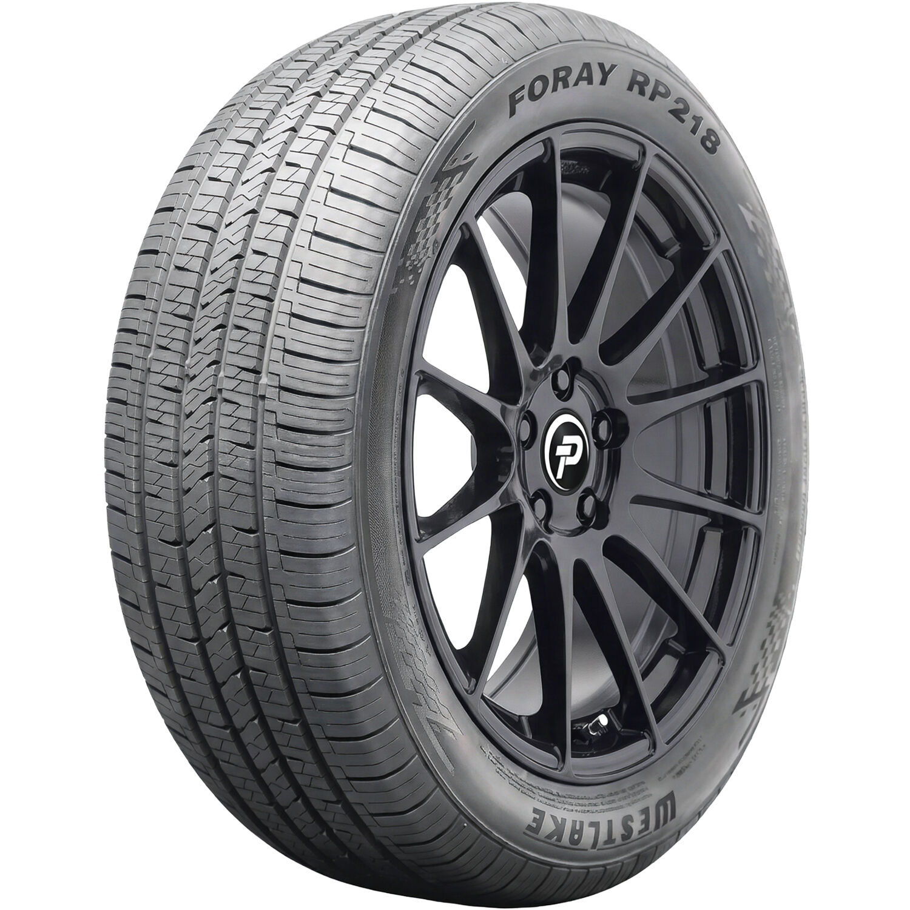

Westlake Foray RP218 195/55R15

RM 148.00
WESTLAKE Foray RP218 – 195/55R15 85V. A touring tyre designed for comfortable everyday driving, offering reliable wet and dry road performance. Wide circumferential grooves help evacuate water and reduce aquaplaning risk, while lateral grooves and variable-depth sipes enhance traction and handling. Its optimized tread pattern promotes even wear and long-lasting performance. Load Index: 85 (515 kg) Speed Rating: V (240 km/h) Tread Depth: 10/32” Type: Touring / All Season Run Flat: No
Klang Hock Li Tyre Services Sdn Bhd, Klang, Selangor, Malaysia.
View live product details and enquire